Functional Dependency
Functional Dependency • It's a set of constraints between two attributes in a relation
• It says that if two tuples(rows) have same values for attributes A1,A2,...An, then those two tuples must have to have same values for attributes B1,B2...,Bn.
• If
t1(A)=t2(A), then we must have
t1(B)=t2(B).
• It typically exist between the
primary keyand
non-key attribute within a table
• Its tepresented by arrow sign (
->)
X->Y where X functinality determines Y
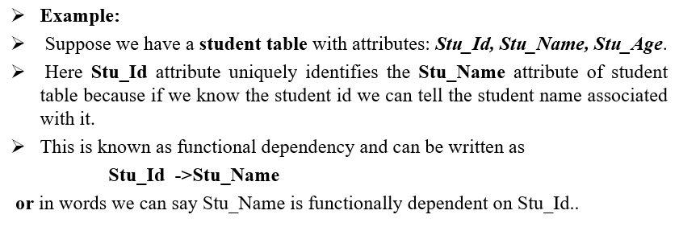
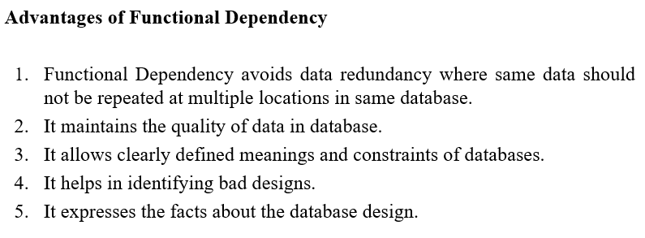
~~~~~~~~~~~~~~~~~~~~~~~~~~~~~~~~~
Steps to check Functional Dependency • You must check the value of A , if all the values of A are unique then FD holds good.
• If all values of B are same then also FD holds good.
• If two same values of A , we get two different values of B , then FD does not holds good.
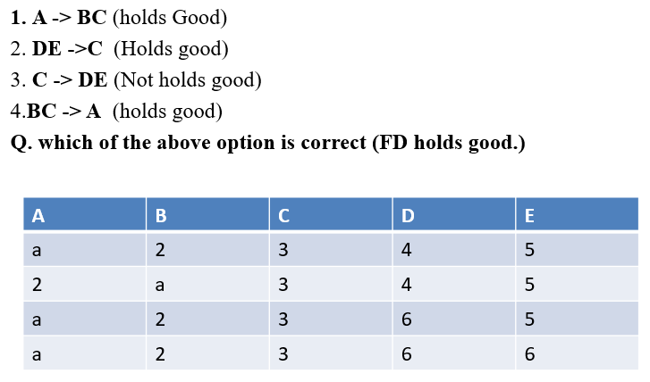 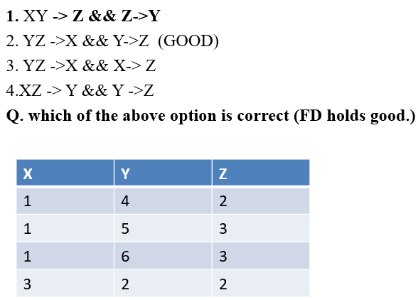 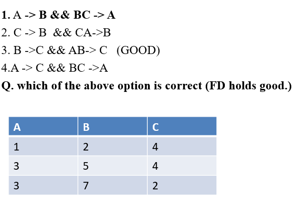
~~~~~~~~~~~~~~~~~~~~~~~~~~~~~~~~~
Types of Functional Dependency
• Trivial functional dependency
◇ A functional dependency X→Y is a trivial functional dependency if Y is a subset or equal of X.
◇ The following dependencies are also trivial: A→A & B→B
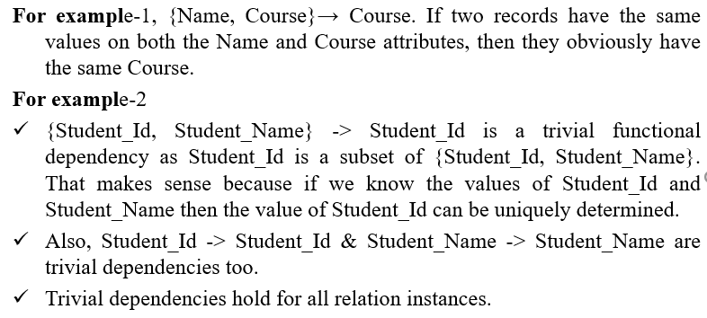
• Non-trivial functional dependency
◇ If a functional dependency X->Y holds true where Y is not a subset of X then this dependency is called non trivial Functional dependency.
◇ For example, Prof→Grade
◇ Non-trivial FDs are given implicitly in the form of constraints when designing a database
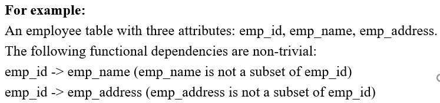
◇ If a FD X->Y holds true where X intersection Y is null then this dependency is said to be
completely non trivial function dependency.
• Multivalued dependency
◇ It occurs when there are more than one independebt multivalued attribute in a table.
◇ For example, Consider a bike manufacture company, which produces two colors (Black and white) in each model every year
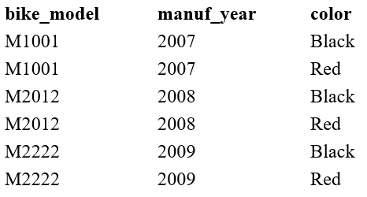 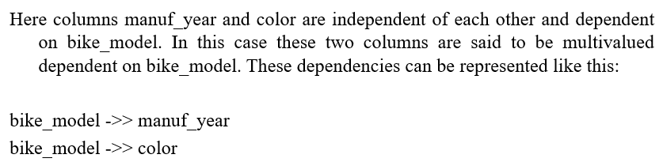
• Transitive dependency
◇ A functional dependency is said to be transitive if it is indirectly formed by two fuunctional dependencies.
◇ For example, X→Z if three conditions are fulfill
▪ X→Y
▪ Y doesn't →X
▪ Y→Z
◇ It can only occur in a relation of three or more attributes. This dependency help us normalizingthe database in 3NF (3rd Normal form)
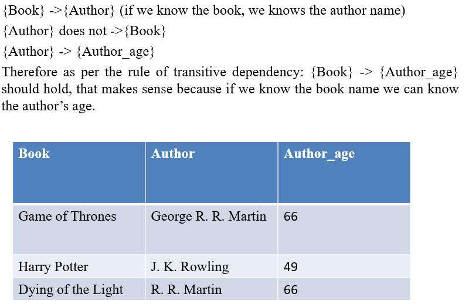
~~~~~~~~~~~~~~~~~~~~~~~~~~~~~~~~~
Armstrong's Inference AxiomsThe inference axiom allow user to infer (to conclude) the FD's that are satisfied by a relation
•
Primary Rules ⇒
Reflexivity: If B ⊆ A then
A→B Ex: { Name , Course }→
Course ⇒Augmentation: If
A→B, then
AC→BC for any C
Ex:If Prof→Grade Then,
{Prof, Major}→{Grade, Major} ⇒Transitivity: If
A→B, and
B→C then
A→C Ex:If Course→Name and Name→Phone_no Then,
Course→Phone_no • Secondary Rules
⇒Union: If
A→B,holds and
A→C holds, then
A→BC holds
Ex: Prof→Grade and Prof→Course FDs are present; therefore
Prof→{Grade, Course} ⇒Decomposition: If
A→BC holds
, then A→B, holds and
A→C holds
Ex:If Prof→{Grade, Course}, then this FD can be decomposed as Prof→Grade and Prof→Course
⇒Pseudo Transitivity: If
A→B holds, and
BC→D holds then
AC→D holds
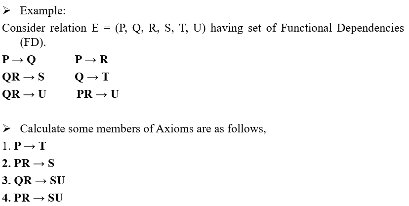
~~~~~~~~~~~~~~~~~~~~~~~~~~~~~~~~~
Closure on a Attribute Set https://www.gatevidyalay.com/closure-of-an-attribute-set/ Attribute Closure of an atrribute set 'A' can be defined as a set of attributes which can be functionally defined from it.
Denoted by
(F)+.
For Ex 1: R(A, B ,C) & A→B, B→C Find(A)+ ?
Sol: (A)+ =A
=AB (A→B)
=ABC (A→C)
Ex 2: Consider a relation R ( A , B , C , D , E , F , G ) with the functional dependencies- A → BC, BC → DE, D → F, CF → G
Sol: Closure of attribute A:
A+ = { A }
= { A , B , C } ( Using A → BC )
= { A , B , C , D , E } ( Using BC → DE )
= { A , B , C , D , E , F } ( Using D → F )
= { A , B , C , D , E , F , G } ( Using CF → G )
A+ = { A , B , C , D , E , F , G }
Closure Of attribute D:
D+ = { D }
= { D , F } ( Using D → F )
D+ = { D , F }
Similarly:
{ B , C }+ = { B , C , D , E , F , G } 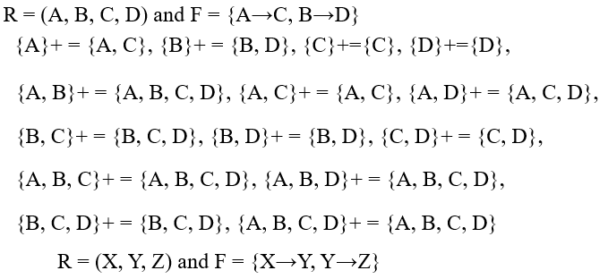
~~~~~~~~~~~~~~~~~~~~~~~~~~~~~~~~~
Closure of a set of Functional Dependency.
Given a set F of functional dependencies for a relation schema R, we define
F+, the closure of F, to be the set of all functional dependencies that are logically implied by F. Mathematically,
F ={X→Y/F|=X→Y}
Steps to generate all FD's
First: Apply the inference axiom to all single attributes and use the FD's of F whenever it is applicable
Second: Apply the inference axioms to all combinations of two attributes and use the functional dependencies of F whenever it is applicable
Next: Apply the inference axioms to all combinations of three attributes and use the FDs of F when necessary
Proceed in this manner for as many different attributes as there are in F
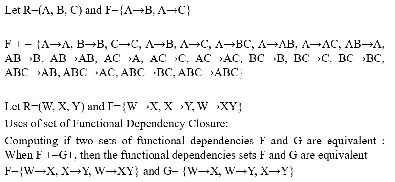
~~~~~~~~~~~~~~~~~~~~~~~~~~~~~~~~~
Use of Attribute Closure.
>Testing for key: To test whether X(single attribute) is a key or not, X
+ is computed. X is a key iff X
+ contains all the attributes of R. X is a candidate key if none of its subset is a key(Only Minimal).
https://www.youtube.com/watch?v=YQt_kz3JgXI https://www.youtube.com/watch?v=9fuJUQJd-A8 Hint: the attributes which are not present on right hand side can be in candidate key
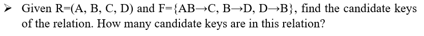
>Testing Functional Dependency: To check whether a functional dependency X
→Y holds or not, just check if Y⊆X
+ 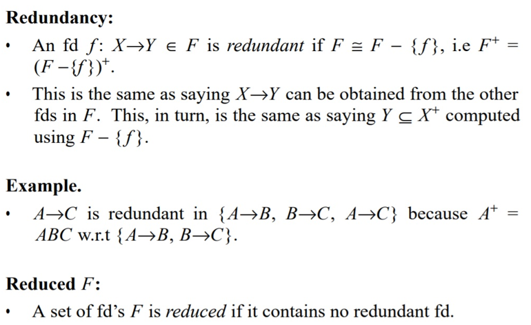 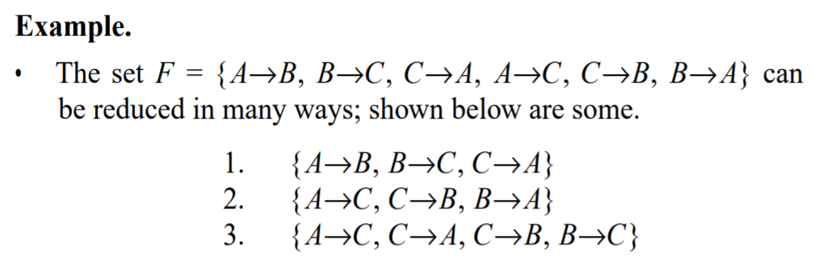
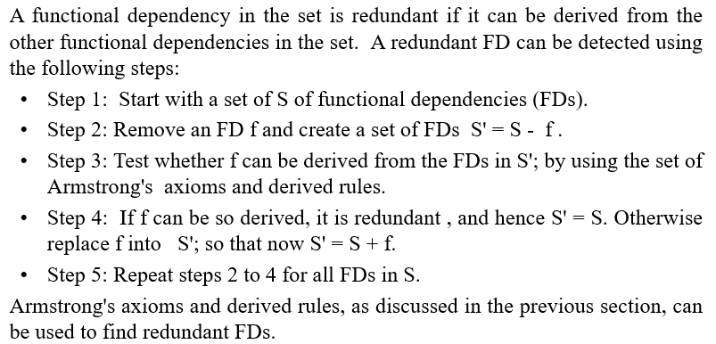 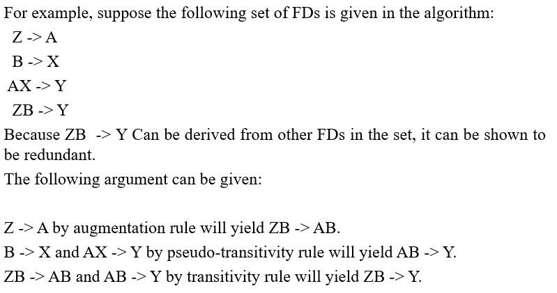
Conanical Cover / Minimal Cover <https://www.youtube.com/watch?v=o0GQQFu-5C0 >
For a given set F of FDs, a canonical cover, denoted by Fc , is a set of FDs where the following conditions are satisfied:
⇒ F and Fc are equivalent
⇒ Every FD of Fc is simple. That is, the RHS of every functional dependency of Fc has only one attribute
⇒ No FD in Fc is redundant
⇒ The determinant or LHS of every FD in Fc is irreducible
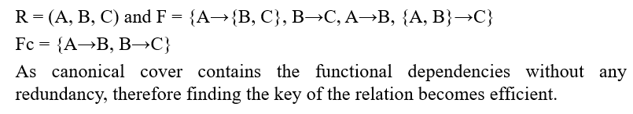
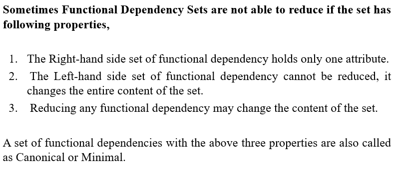
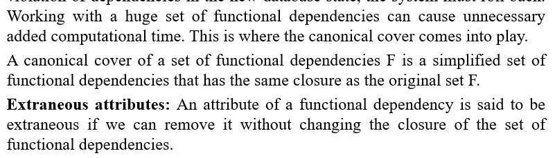
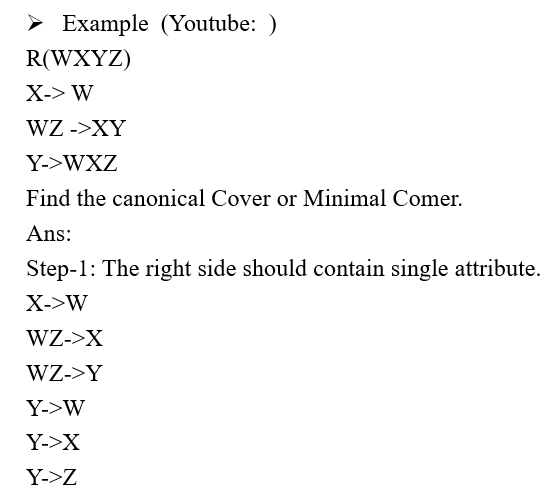 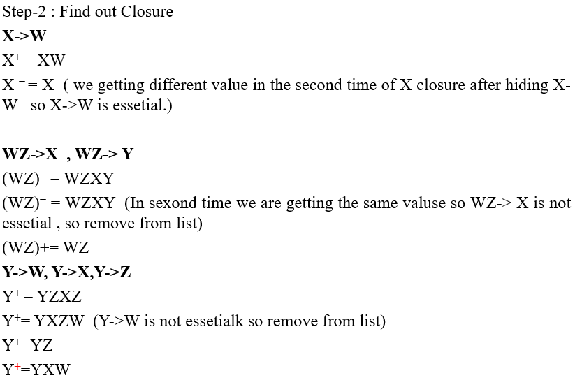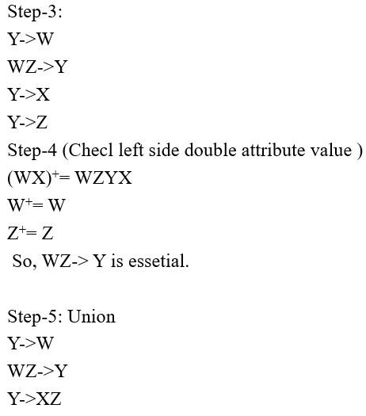